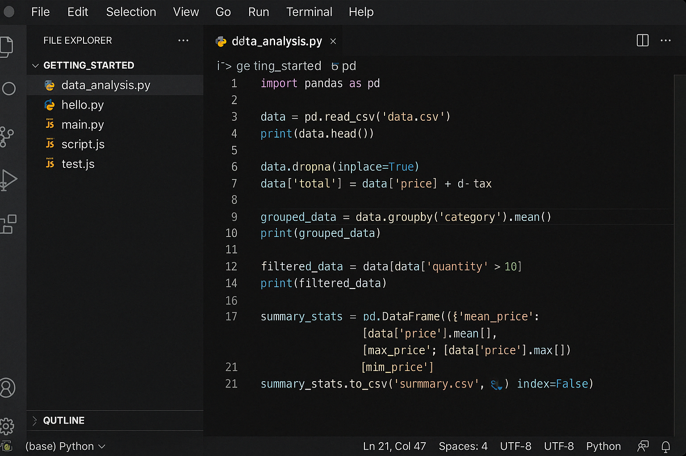
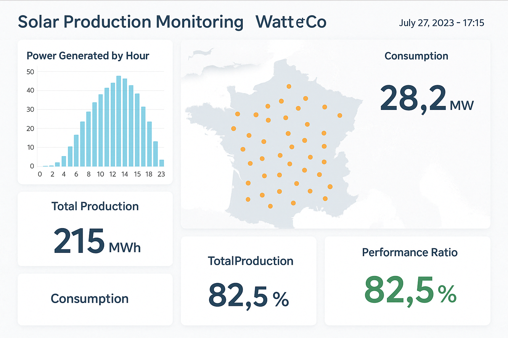
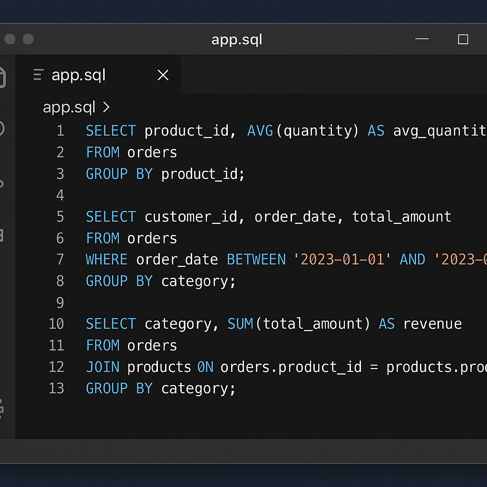

05 — Stack
Technologies maîtrisées
Les outils que j'utilise au quotidien.
Python
SQL
Docker
Kubernetes
Airflow
Power BI
TensorFlow
PyTorch
Git
MongoDB
Azure
Spark
PostgreSQL
GCP
Linux
Je transforme des données brutes en modèles prédictifs et en décisions concrètes. Passionné par les Time Series, l'automatisation et les projets à impact industriel.
Data Scientist · M2 Ingénierie des Données
Actuellement en Master 2 Ingénierie des Données à Toulouse, je travaille depuis 4 ans sur des projets data à impact réel : détection de pannes sur centrales solaires, traitement de 28 000 tickets/an, modélisation financière.
Ce qui me motive ? Résoudre des problèmes concrets. Pas juste construire des modèles — les rendre utiles, explicables, et déployés en production.
En dehors du code, je m'intéresse à l'impact environnemental des données, aux mathématiques appliquées, et aux domaines comme l'actuariat où la donnée change des vies.
Validation statistique, benchmarking, reproductibilité. Chaque résultat doit être justifiable.
Un modèle non déployé ne vaut rien. Je travaille jusqu'à ce que ça tourne en production.
Je traduis les résultats techniques en insights actionnables pour les équipes métier.
Énergie solaire, réseau électrique, performance industrielle — la donnée qui change les choses.
De la curiosité mathématique aux pipelines ML en production.
Des missions en alternance sur des problèmes réels, en production.
Déploiement d'une architecture data complète sur cluster Kubernetes. Conception de pipelines automatisés pour nettoyer et classifier 28 000 tickets/an. Modélisation financière pour la détection d'anomalies et l'anticipation des dérives de coûts. Tableaux de bord temps réel pour le pilotage des SLA.
Développement de modèles prédictifs sur séries temporelles pour détecter les pannes en amont sur 15 centrales solaires. EDA complète, sélection de features, benchmarking ML vs deep learning. Livraison de notebooks reproductibles et guides utilisateurs. Centralisation des données (Dataverse) et flux Power Automate.
Analyse de 100 000+ lignes de données de compteurs Linky (séries temporelles haute fréquence). Automatisation des traitements Python (réduction du temps d'analyse de 30 %). Production de rapports pour les équipes non-techniques et visualisations Power BI.
Exploration, curiosité, et apprentissage en dehors du travail.
Entraînement d'un modèle de classification d'images avec TensorFlow/Keras. Pipeline complet : prétraitement, entraînement, validation (accuracy, loss), visualisation sur Streamlit.
Base MongoDB alimentée par scraping web automatisé (BeautifulSoup). Analyse de sentiments, extraction de notes, génération de rapports. Travail sur la qualité des données non structurées.
Étude de données climatiques NASA pour expliquer les variations de température et anomalies atmosphériques. Graphiques dynamiques et visualisation des tendances longue durée.
Les outils que j'utilise au quotidien.
Python
SQL
Docker
Kubernetes
Airflow
Power BI
TensorFlow
PyTorch
Git
MongoDB
Azure
Spark
PostgreSQL
GCP
Linux
Trois domaines où je crée de la valeur rapidement.
De l'exploration à la mise en production : EDA, feature engineering, sélection de modèles, benchmarking, validation statistique. Je construis des pipelines reproductibles avec du code commenté et des notebooks clairs. Scikit-learn, TensorFlow, PyTorch — je choisis l'outil selon le problème.

Je transforme des données complexes en tableaux de bord lisibles et actionnables. DAX, Power Query, design d'indicateurs pour les décideurs. L'objectif n'est pas un beau graphique — c'est une décision qui s'en suit.

Dashboard Power BI
Requêtes optimisées, modélisation de pipelines, orchestration avec Airflow. Je construis des architectures data fiables de bout en bout — de l'ingestion à la restitution, sur des environnements Kubernetes ou cloud.

Requêtes & pipelines
Les mots de ceux avec qui j'ai travaillé.
"Hans est un étudiant talentueux, rigoureux et passionné. Il a rapidement maîtrisé les techniques d'apprentissage automatique et su travailler en autonomie. Sa capacité à résoudre des problèmes complexes et à communiquer ses idées m'a particulièrement impressionnée. Je le recommande sans hésitation pour toute opportunité en data science."
📎 Lettre de recommandation"Hans est un étudiant sérieux, volontaire et très impliqué, notamment en statistiques et projets de groupe. Il pose des questions pertinentes et participe activement. Son alternance lui a permis d'élargir ses compétences en bases de données. Je recommande vivement sa candidature."
📎 Avis poursuite d'étudesOuvert aux opportunités CDI à Toulouse et alentours.